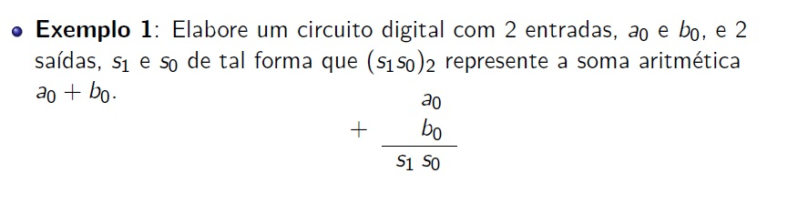
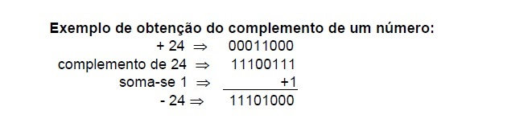

◉ Representando Dados em Circuitos Digitais
➤ Meio Somador
Como sabemos, os computadores trabalham na forma binaria e ja é de se esperar que o mesmo faca suas operacoes na forma binaria.

Relembrando a soma de dois numeros binarios teremos:
O diagrama de blocos seria uma porta XOR para a saída de soma S e uma porta AND para Ts, também chamada de carry (C).
Esse circuito é denominado Meio Somador (Half-Adder).

➤ Somador Completo
O meio somador possibilita efetuar a soma de numeros binarios com 1 algarismo.
Mas no mundo real se faz necessario que esta soma seja efetuadas com um numero maior de algarismos.
Para satisfazer estas condicoes o circuito necessita de uma entrada de transporte proveniente de uma saida de transporte da casa binária anterior.
Para melhor compreensao, vamos analisar o caso da soma a seguir:
Extrapolando para a soma de duas palavras binárias A e B, de comprimentos (números de bits) quaisquer, i+1, onde ai e bi são os bits da casa binária i,
a serem somados e ci é o bit de carry (ou transporte, ou vai-um) daquela casa binária:

Desta forma a tabela verdade ficaria do seguinte modo:
E o circuito completo, após minimização, seria:
Assim, os somadores digitais são, na verdade, blocos modulares, caixas-pretas as quais, combinadas, permitem que se implemente circuitos somadores para tantos bits quantos forem necessários:
Exemplos de somadores comerciais: 7483 (TTL) e CD4008 (CMOS)
Exemplo de somador de 12 bits, usando o 4008:
➤ Subtração Binária
Representação binária de números positivos
Representam-se números inteiros positivos através do valor do próprio número binário.
Porém, existe um limite estabelecido por memórias finitas, onde normalmente é definido por um conjunto de 4 bits.
Portanto, pode-se representar 2^4 = 16 números diferentes, de 0000 a 1111.
A representação estabelecida em função da limitação de bits é explicitada pelos números ao redor de um círculo,
e não ao longo de um eixo infinito, como na matemática convencional.
Para a operação de adição de dois números a e b, basta encontrar a representação de a no círculo e avançar b
posições no sentido horário. Para efetuar a subtração a-b, basta recuar b posições a partir de a, no sentido anti-horário.
Representação binária de números negativos
Inicialmente, consideram-se positivos os números cujo bit mais significativo (MSB) é 0 e negativos, os números cujo MSB é 1,
portanto, dividindo ao meio o conjunto dos números representáveis no círculo em questão.
Assim, numa formação de um número com 4 bits, têm-se 8 números com representação negativa e 8 números com representação positiva.
Com esta formação, a capacidade de representação de números vai de –8 até +7.
Para representar números além destes limites, é necessário adotar registradores maiores, por exemplo, de 8, 16 ou 32 bits.
Grande parte dos sistemas digitais usa um único circuito para efetuar subtração e soma.
Neste circuito, a subtração é efetuada por soma, num processo conhecido como complemento de dois.
COMPLEMENTO DE UM NÚMERO BINÁRIO
O complemento de um número binário é obtido trocando-se todos "Øs" por "1s" e todos "1s" por "Øs".
Exemplo:
Obter o complemento do binário 1Ø1Ø11
Solução:
O complemento é Ø1Ø1ØØ
COMPLEMENTO DE DOIS DE UM NÚMERO BINÁRIO
O complemento de dois de um número binário é obtido tomando-se o complemento do número binário e somando-se 1 a este complemento.
Exemplo 1:
Obter o complemento de dois do binário correspondente ao decimal 3, em quatro bits.
Solução:
3(10) = ØØ11(2)
O complemento de 11 é 11ØØ. O complemento de dois de 11ØØ é 11ØØ + 1 = 11Ø1
Então, o complemento de 2 de 3 é 11Ø1
Exemplo 2:
Obter o complemento de dois do binário Ø1.
Solução:
O complemento de Ø1 é 1Ø. O complemento de 2 de Ø1 é 1Ø + 1 = 11
Exemplo 3:
Calcular o complemento de dois do decimal 24:
Solução:

Exemplo 4:
Efetuar a subtração através da soma 11Ø (Minuendo) - Ø11 (Subtraendo), em 3 bits
Solução:
Toma-se o complemento de dois do subtraendo e soma-se este complemento ao minuendo; tem-se então:
Exemplo 5:
Efetuar a subtração do decimal 49 menos o decimal 12:
Solução:
Para a subtração genérica de um número B menos o número A binário:
Uma maneira de se ver o circuito seria:
➤ Circuito Somador-Subtrator
Funcionamento:
Quando a entrada de seleção estiver em Ø, a operação executada é a SOMA dos números A = A3 A2 A1 AØ e B = B3 B2 B1 BØ .
Isto porque com a entrada de seleção em Ø, obtém-se a saída dos "OU EXCLUSIVOS" como ilustra a figura abaixo.
Por outro lado, quando a entrada de seleção estiver em 1, obtém-se a saída dos "OU EXCLUSIVOS" como ilustra a figura, isto é, invertendo cada bit de entrada da palavra B.
Então, o circuito somador irá efetuar a soma de A3 A2 A1 AØ com INV(B3) INV(B2) INV(B1) INV(BØ) = C1(B) e 1, sendo que o 1 entra no carry menos significativo.
Isto é:
➤ Multiplicação e Divisão Binária
Soluções
Unidade Lógico-Aritmética (ULA)
O circuito integrado 74181 é uma ULA de 4 bits, executa 16 operações lógicas e 16 operações aritméticas entre duas palavras de 4 bits.
As duas palavras A e B devem ser colocadas nas entradas, respectivamente, A3-A2-A1-A0 e B3-B2-B1-B0.
As entradas S3-S2-S1-S0 selecionam que tipo de operação será executado entre as entradas A e B.
O resultado da operação é apresentado nas saídas F3-F2-F1-F0.
A entrada M determina se a saída é uma função aritmética ou lógica das entradas.
Por sua vez, Cn (carry in) seleciona um dos grupos de 16 operações aritméticas possíveis.
A saída A=B avisa quando as duas palavras são iguais em magnitude.
A saída Cn+4 (carry out) corresponde ao carry do último estágio e é usada no cascateamento com outras ULAs.
A saída G (geração) e P (propagação) são usadas em operações especiais quando os CIs 74181 e 74182 são combinados para aumentar o tempo de processamento.